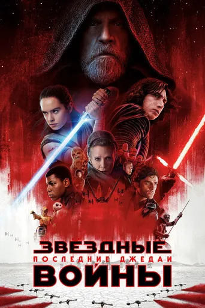

Звёздные войны: Эпизод 8 - Последние джедаи 2017
Новая история о противостоянии света и тьмы, добра и зла начинается после гибели Хана Соло. В Галактике, где Первый Орден и Сопротивление яростно сражаются друг с другом в войне, героиня Рей пробудила в себе Силу. Но что произойдет, когда она встретится с единственным оставшимся в живых рыцарем-джедаем - Люком Скайуокером? Кайло Рен перешел на Темную сторону Силы и убил собственного отца, заняв высокую позицию в Первом Ордене. Но куда приведут его неуемные амбиции, подаренные по наследству грозным дедом Дартом Вейдером? Ситуация обострится еще больше, когда мать Кайло, лидер Сопротивления Лея, вместе с По, Финном и BB-8 приступит к новой миссии.
Открыть в каталогеДанные и постеры принадлежат их правообладателям. Этот продукт использует TMDB API, но не одобрен и не сертифицирован TMDB.